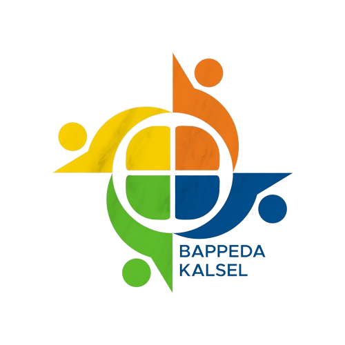

SOSIAL
1. Tanpa Kemiskinan
2. Tanpa Kelaparan
3. Kehidupan Sehat dan Sejahtera
4. Pendidikan Berkualitas
5. Kesetaraan Gender
EKONOMI
7. Energi Bersih dan Terjangkau
8. Pekerjaan Layak dan Pertumbuhan Ekonomi
9. Industri, Inovasi dan Infrastruktur
10. Berkurangnya Kesenjangan
17. Kemitraan Untuk Mencapai Tujuan
LINGKUNGAN
6. Air Bersih dan Sanitasi Layak
11. Kota dan Pemukiman Yang Berkelanjutan
12. Konsumsi dan Produksi Yang Bertanggung Jawab
13. Penanganan Perubahan Iklim
14. Ekosistem Lautan
15. Ekosistem Daratan
HUKUM DAN TATA KELOLA
16. Perdamaian, Keadilan dan Kelembagaan Yang Tangguh
Kode Indikator
Indikator
16.2.1
Proporsi anak umur 1-17 tahun yang mengalami hukuman fisik dan/atau agresi psikologis dari pengasuh dalam sebulan terakhir
16.2.1 (a)
Proporsi rumah tangga yang memiliki anak umur 1-17 tahun yang mengalami hukuman fisik dan/atau agresi psikologis dari pengasuh dalam setahun terakhir
16.2.1 (b)
Prevalensi kekerasan terhadap anak laki-laki dan anak perempuan
16.2.2
Angka korban perdagangan manusia per 100.000 penduduk menurut jenis kelamin, kelompok umur dan jenis eksploitasi
16.2.3
Proporsi perempuan dan laki-laki muda umur 18-29 tahun yang mengalami kekerasan seksual sebelum umur 18 tahun
16.2.3 (a)
Proporsi perempuan dan laki-laki muda umur 18-24 tahun yang mengalami kekerasan seksual sebelum umur 18 tahun
16.3.1 (b)
Jumlah orang atau kelompok masyarakat miskin yang memperoleh bantuan hukum litigasi dan non litigasi
16.6.1*
Proporsi pengeluaran utama pemerintah terhadap anggaran yang disetujui
16.6.1 (a)
Persentase peningkatan Opini Wajar Tanpa Pengecualian (WTP) atas Laporan Keuangan Kementerian/ Lembaga dan Pemerintah Daerah (Provinsi/Kab/Kota)
16.6.1 (b)
Persentase peningkatan Sistem Akuntabilitas Kinerja Pemerintah (SAKIP) Kementerian/Lembaga dan Pemerintah Daerah (Provinsi/ Kabupaten/Kota)
16.6.1.(a)
Persentase peningkatan Opini Wajar Tanpa Pengecualian (WTP) atas Laporan Keuangan Kementerian/ Lembaga dan Pemerintah Daerah (Provinsi/Kab/Kota)